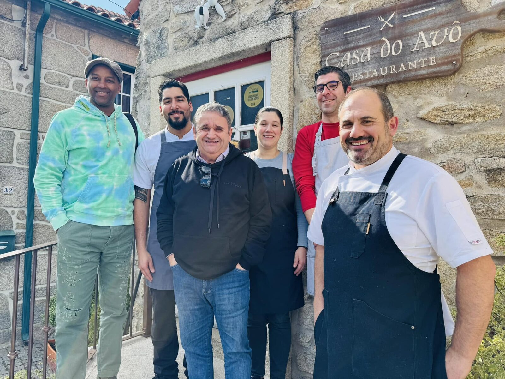

A casa
A casa que era do avô
Esta era mesmo a casa do avô. Ficou fechada durante anos, foi recuperada pedra a pedra e reaberta como restaurante, sem perder o traço da construção original em granito.
A brasa está sempre acesa. É aqui que se assam as postas de vitela, o bacalhau e o polvo, com a mesma calma de sempre. Trabalhamos de perto com produtores da região para trazer o porco Bísaro à mesa em três formas diferentes, do presunto à alheira, e mantemos a ementa curta para que cada prato saia bem feito.
